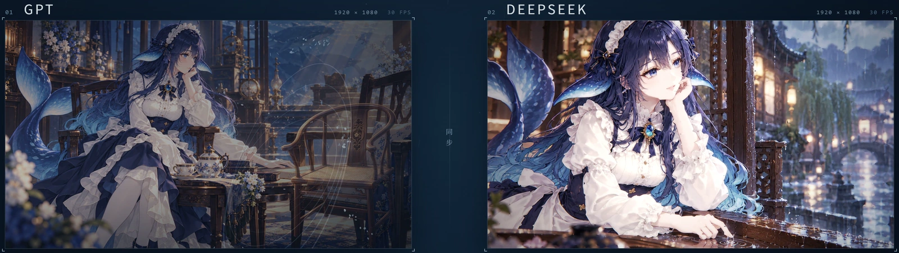

<meta charset="utf-8"><style>*{box-sizing:border-box}body{margin:0}a{color:inherit;text-decoration:none}header,footer{display:flex;justify-content:space-between}small,nav,footer{font:12px/1.5 'Courier New',monospace}img{object-fit:cover}p{max-width:420px;line-height:1.5}button{font:inherit}h1,h2,p{margin:0}body{width:1440px;height:1000px;overflow:hidden}header{padding:28px 60px;border-bottom:1px solid}nav{display:flex;gap:32px}.actions{display:flex;gap:30px;margin-top:30px}.actions a{border-bottom:1px solid;padding:12px 0}</style><title>Film edit</title><style>body{background:#191b18;color:#efeee6;font-family:Arial}header{border-color:#666}main{position:relative;margin:40px 60px;height:680px;background:#e9e7dc;color:#191b18}main img{width:100%;height:100%;object-fit:contain}h1{position:absolute;bottom:-110px;left:20px;font:900 240px/1 Arial;letter-spacing:-.08em;color:#a95d42}.note{position:absolute;left:40px;top:32px;font:22px Georgia}footer{margin:130px 60px 0}.role{font:16px Georgia}</style><header><b>kallist / selected work</b><nav>WORK &nbsp; FILMS &nbsp; RESUME ↗ &nbsp; 中文</nav></header><main><span class="note">Systems & stories, in motion.</span><h1>kallist.</h1></main><footer><span class="role">AI application & Agent engineering · Class of 2027</span><span>EXPLORE WORK ↗ / RESUME ↗ / CONTACT ↗</span></footer>